正式產品名 Gemini Notebook（原 NotebookLM，2026-07-16 改名）
入口 https://notebook.google/
示範筆記本：MSC公眾・力與能量
查證日期：2026-10-23（Asia/Macau, UTC+8）
示範帳：Oscar · Google AI Pro（付費畫面會標明門檻）
澳門科學館 Oscar 製作
← → 鍵、下方按鈕或左右滑動翻頁；點擊截圖可放大
額度／地區／按鈕以官方當日介面為準
澳門科學館 Oscar 製作 · Gemini Notebook 公眾班 · 2026-10-23
點擊標題跳轉；右上角 ☰ 亦可隨時開啟目錄。
對象：約 12 歲以上家庭與一般訪客。這不是教師備課培訓。
Source-grounded＝答案應來自你上傳的導賞稿／影片／網頁。
| 時間 | 名稱 |
|---|---|
| 2023-05 | Project Tailwind |
| 2023-07 | NotebookLM |
| 2026-07-16 | Gemini Notebook（正式改名） |
來源：blog.google 改名公告、Workspace Updates（2026-07）
| 方案 | 筆記本／用戶 | 來源／本 |
|---|---|---|
| Standard（免費用 Gmail） | 100 | 50 |
| Google AI Plus | 200 | 100 |
| Google AI Pro（本示範帳） | 500 | 300 |
| Google AI Ultra | 500 | 500–600 |
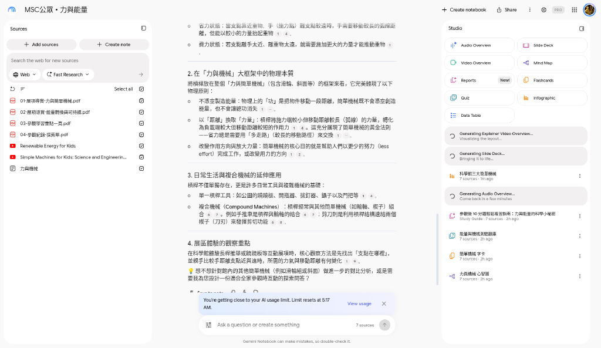
來源：support.google.com plans／usage limits（查證 2026-10-23）
Oscar 帳為 Google AI Pro → 畫面可能出現付費選項。
location=unsupported 或無法正常使用。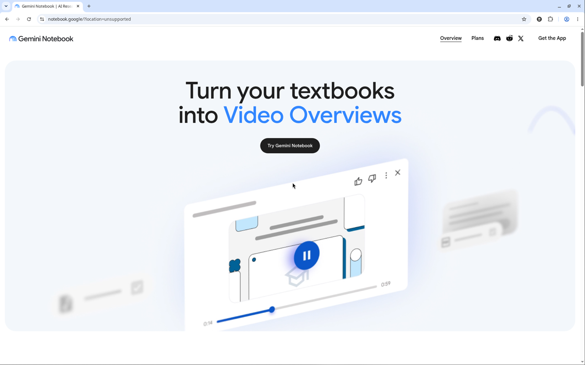
S1 行前準備：出發前讀導賞稿
筆記本名稱：MSC公眾・力與能量
01 力與簡單機械（PDF · 566 KB）02 能量轉換與可持續（PDF · 576 KB）03 參觀學習重點（一頁 PDF · 448 KB）04 參觀紀錄探索單（PDF · 442 KB）——紙本可發，不必上傳一次取得本班來源材料與已匯出 Studio 成品。
開啟下載中心 → 來源材料 ZIP（826 KB） Studio 成品 ZIP（不含影片 · 23.0 MB）
| 檔案 | 類型 | 用途 |
|---|---|---|
| 01-展項導賞-力與簡單機械.pdf（566 KB） | 力與簡單機械導賞稿 | |
| 02-展項導賞-能量轉換與可持續.pdf（576 KB） | 能量轉換與可持續導賞稿 | |
| 03-參觀學習重點一頁.pdf（448 KB） | 參觀學習重點一頁 | |
| 04-參觀紀錄-探索單.pdf（442 KB） | 現場探索單 | |
| 05-實驗假資料.csv（1 KB） | CSV | 示例數據（非館方實測） |
| youtube-source.txt（2 KB） | TXT | YouTube 來源清單 |
完整列表見 downloads/。已匯出例： Audio 1 · Audio 2 · Video · Infographic · Slides PDF · Slides PPTX · 複習指南。 Quiz／字卡／心智圖：產品無匯出，本站無檔。
S1 一主題一本——勿把旅遊攻略跟科學導賞混同一本
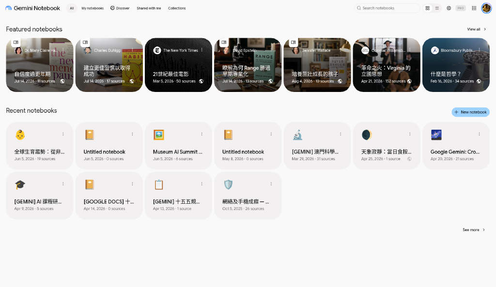
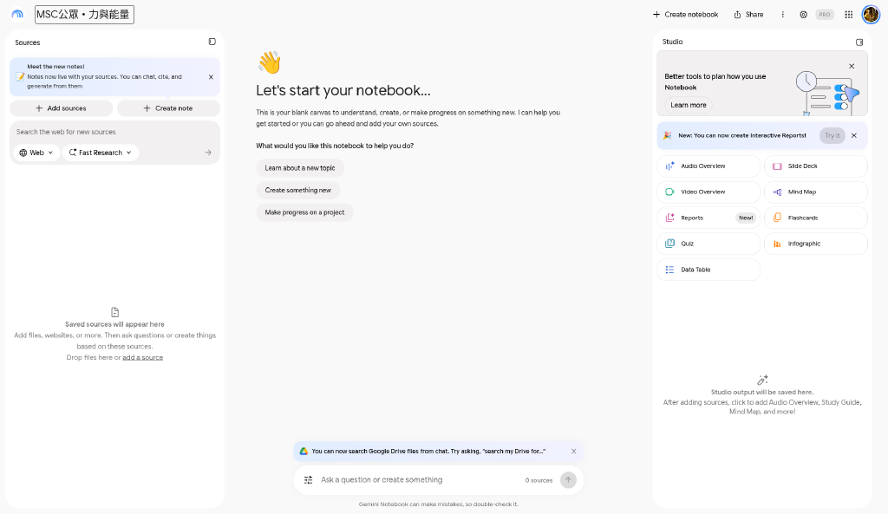
按鈕文案若改版，以當日介面為準；勿死記座標。
下載：見上列連結，或到 材料下載頁。
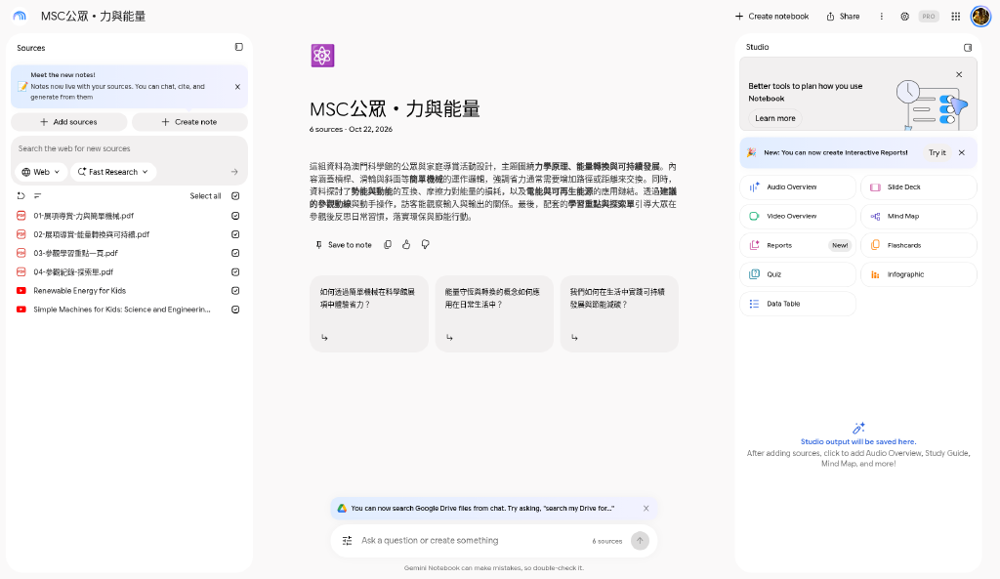
免費方案每本來源數有上限（Standard 約 50）；本示範遠低於上限。
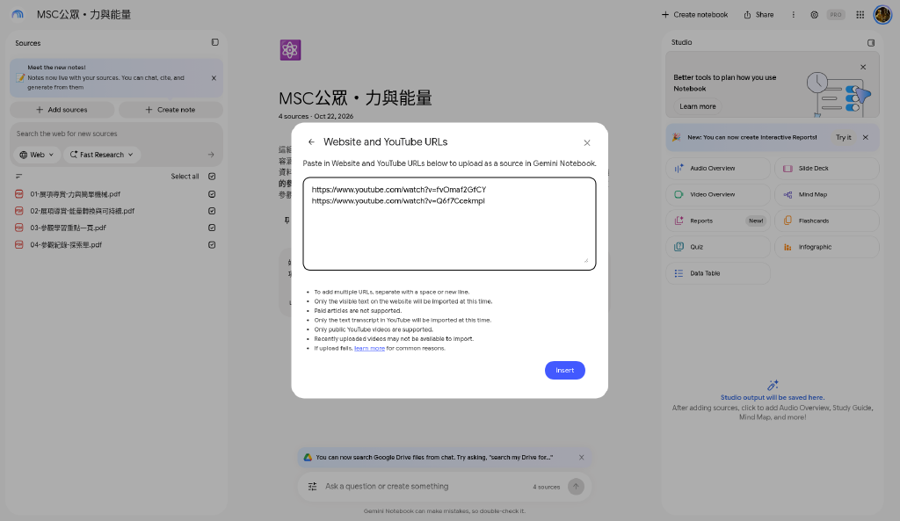
S1 可問「哪一角較快」——但要講清楚是假資料
05-source-csv-or-table.png06-discover-sources-if-any.png常見版面：來源 ｜ 對話 ｜ Studio
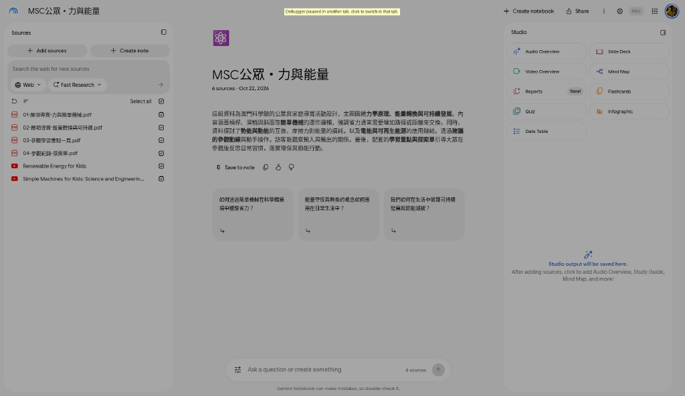
以當日版面為準；名稱或欄位可能改版。
S1 對象＝來科學館的家庭
你是科學館導賞助手。只根據筆記本來源，用 12 歲以上家庭聽得懂的話，列出今天參觀「力與簡單機械」必懂的 5 個概念；每一點附引用。少公式、多生活例子。
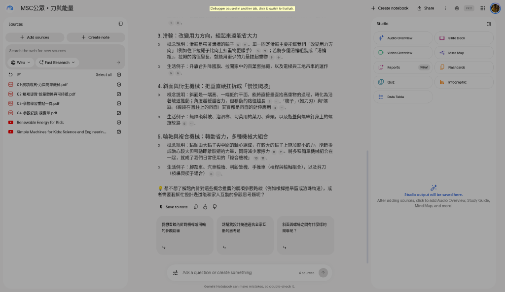
下一頁：每條 citation 都點一次。
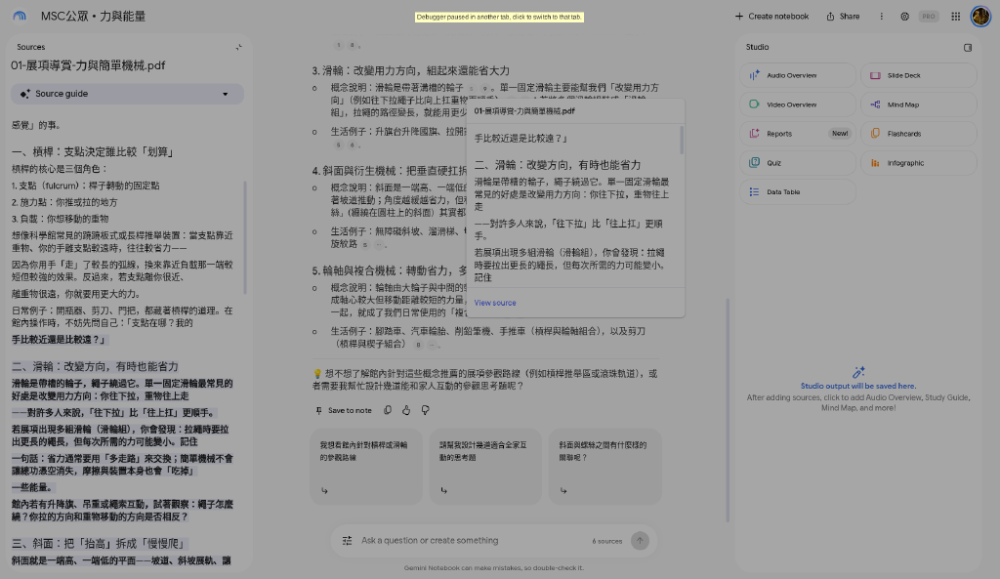
Grounding 降風險 ≠ 保證正確。以下為本筆記本實測錯誤（2026-10-23）。
| # | AI 說法 | 問題 | 正確提醒 |
|---|---|---|---|
| E01 | 「找對支點，力氣瞬間變大」並列鑷子與蹺蹺板、開瓶器 | 鑷子屬第三類槓桿，通常更費力換精細控制 | 第三類≠省力；省力常見一／二類（視支點） |
| E02 | 斜面例子含「溜滑梯」 | 溜滑梯是重力向下滑，不是用更長路徑抬重省力 | 改舉無障礙斜坡、搬重物走斜坡 |
| E03 | 輪軸：大輪施小力並「減少摩擦力」（腳踏車／汽車輪胎） | 把滾動減阻與輪軸力矩機械混在一起 | 分開：輪軸（方向盤、絞盤）vs 滾動減阻 |
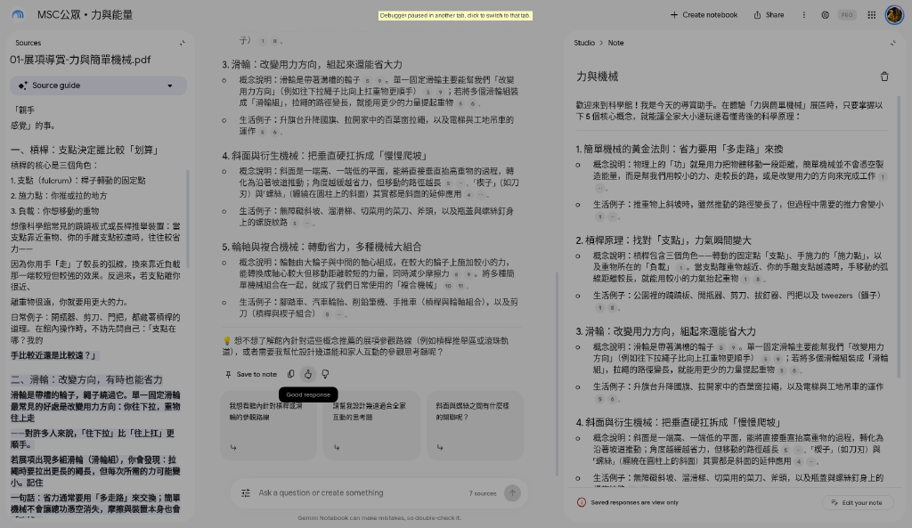
偏蘇格拉底：引導你自己想，不是直接給答案。
不要直接給答案。用引導式問題，幫我自己想清楚：槓桿的支點、施力、抗力分別是什麼？一次只問一個問題。
11-guided-learning-if-any.png現場沒有此入口就跳過，改用一般 Chat 加上「不要直接給答案」提示。
Audio／Video／Mind Map／Reports／Cards／Quiz／Infographic／Slide…
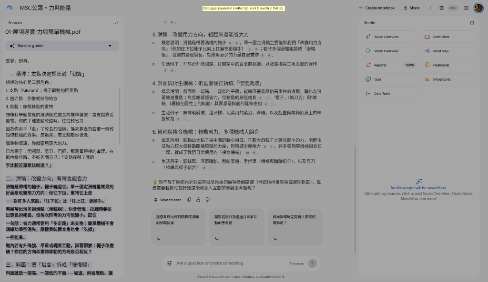
名稱以當日 Studio 面板為準；額度分級見各功能頁。
S1 點節點可回 Chat 追問迷思
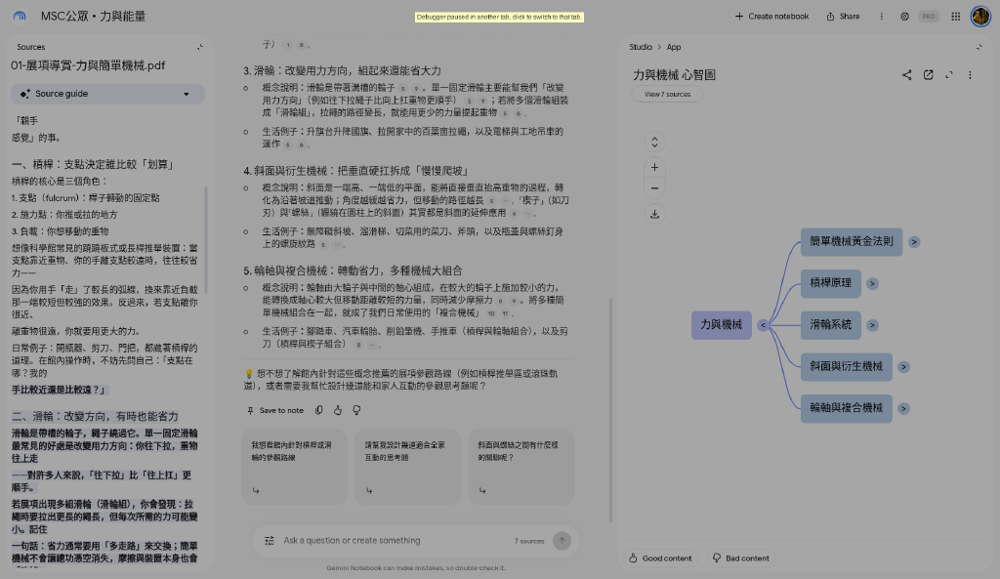
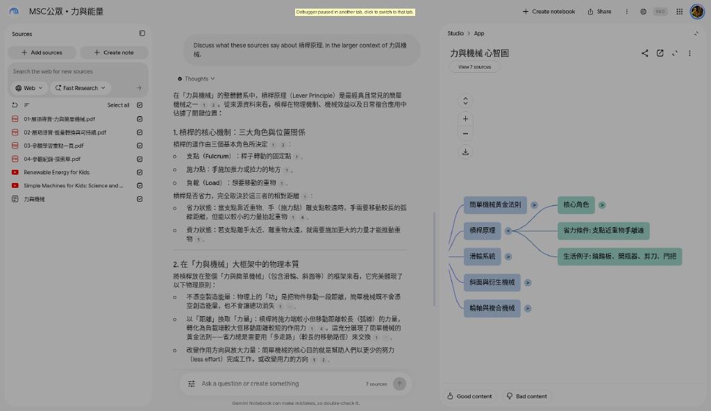
心智圖：產品介面無匯出按鈕（查證 2026-10-23），本站無檔；課堂請在產品內使用。其他成品見 下載中心。
S2／S4 館內複習／通勤聽導覽
Audience：來澳門科學館的家庭訪客（約 12 歲以上）。Focus：省力原理與動能／勢能轉換；少公式；語氣像友善導賞員。格式建議 The Brief；語言 Traditional Chinese。
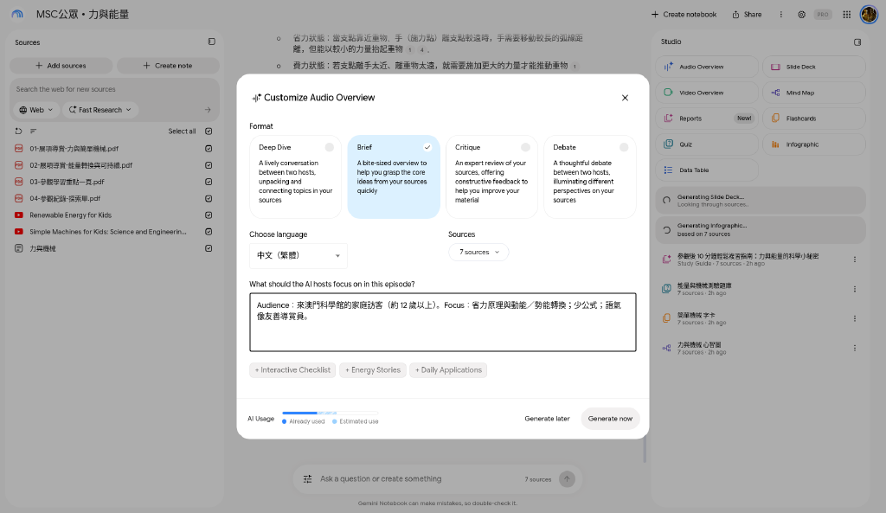
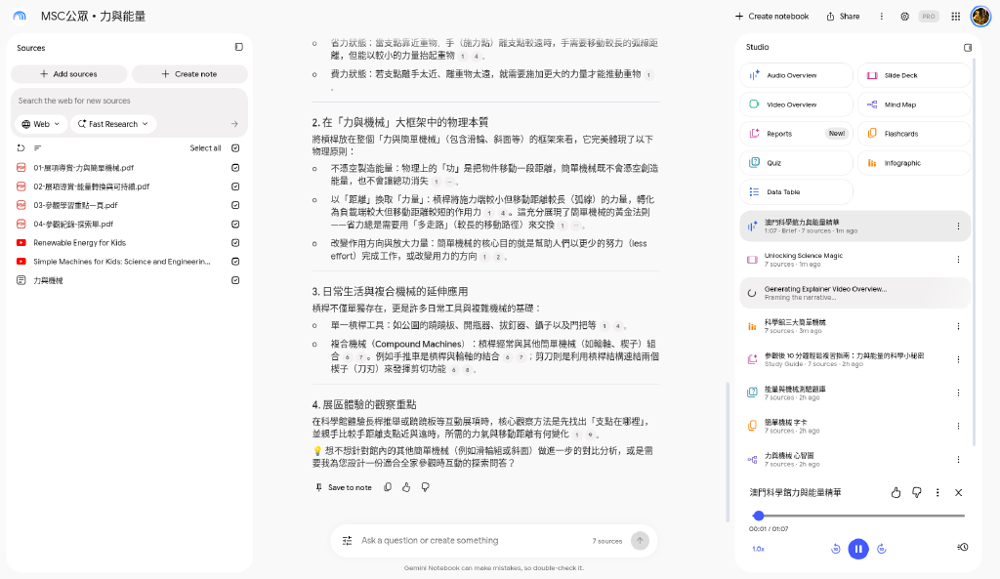
現場可只播 20–30 秒示範。
示範檔：01-audio-overview-1.m4a（澳門科學館力與能量精華 · 約 1:07 · 2.1 MB）。更多見 下載中心。
17-audio-interactive-english.pngS5 做一頁／一支短片帶回家
Audience：家庭訪客。Focus：用滾珠／斜面故事講能量轉換；畫面節奏清楚；語言與帳戶輸出設定一致（優先繁中若可用）。避免誇大「一定省力多少倍」。
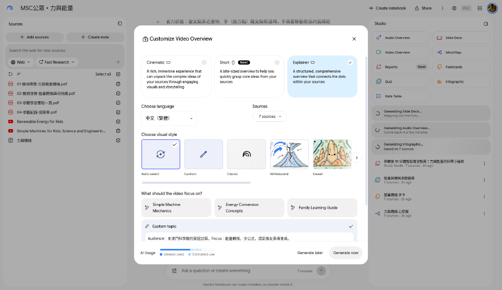
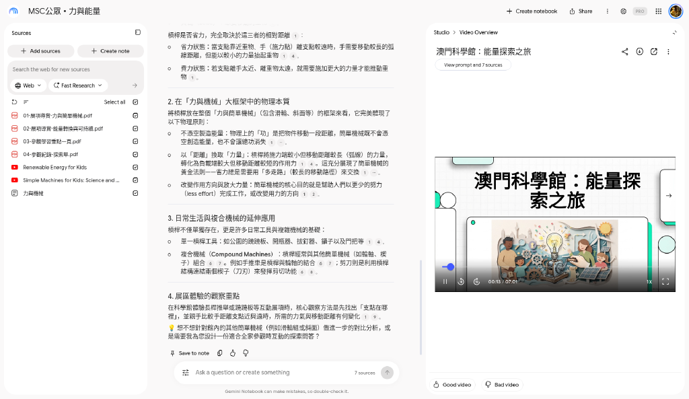
示範檔：03-video-explainer.mp4（能量探索之旅 · Explainer · 約 7:01 · 37.2 MB）。更多見 下載中心。
| 項目 | 門檻（文件） |
|---|---|
| Cinematic Video | 18+、多為 Pro／Ultra、僅 English |
| Producer notes（先審再渲染） | 僅 Google AI Ultra |
20-cinematic-or-gate.png21-producer-notes-ultra.png同一筆記本可存多份 Audio／Video／Mind Map／Report…
同上 audience，但 Focus 改為「只關斜面與滾落，不講槓桿」；長度 Shorter。
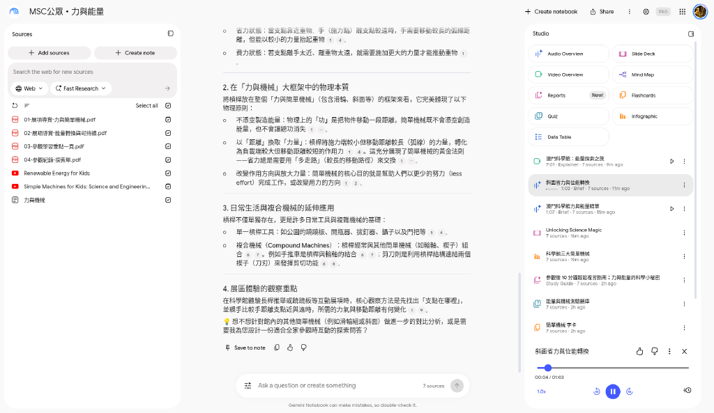
第二份示範檔：02-audio-overview-2-slope.m4a（約 1:03 · 2.0 MB）。更多見 下載中心。
S5 參觀後 10 分鐘複習包
做一份「參觀後 10 分鐘複習」學習指南：三個必記句子、兩個常見誤解、三題自問自答；對象＝家庭訪客，非考試卷。
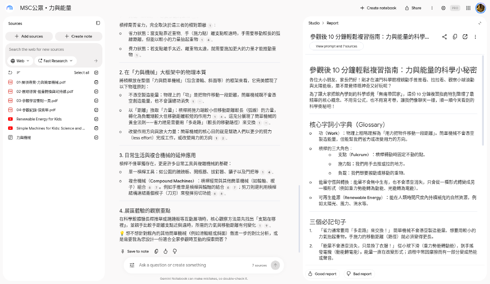
示範檔：08-report-or-study-guide.pdf（145 KB）。更多見 下載中心。
S5 一次一個主題，勿塞太滿
一張圖說清「三種簡單機械＋各一個科學館情境例子」；大字、少字、適合手機分享。
Presenter 風格、約 6 頁：封面、力、簡單機械、能量轉換、可持續、回家可以做的一件事；對象＝公眾班投影。
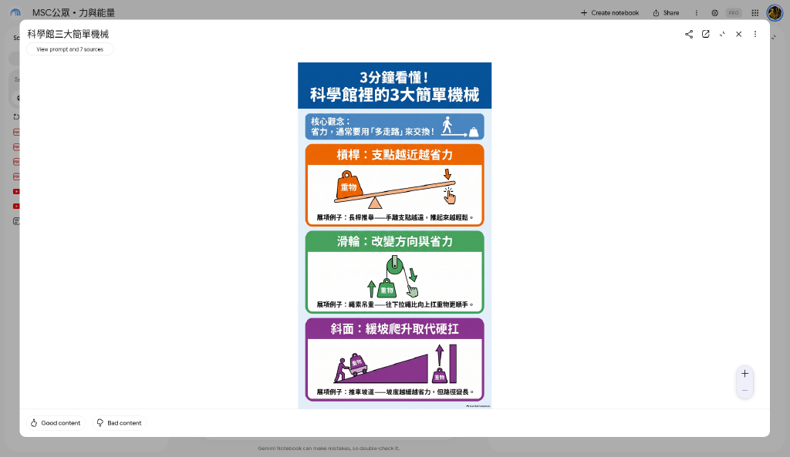
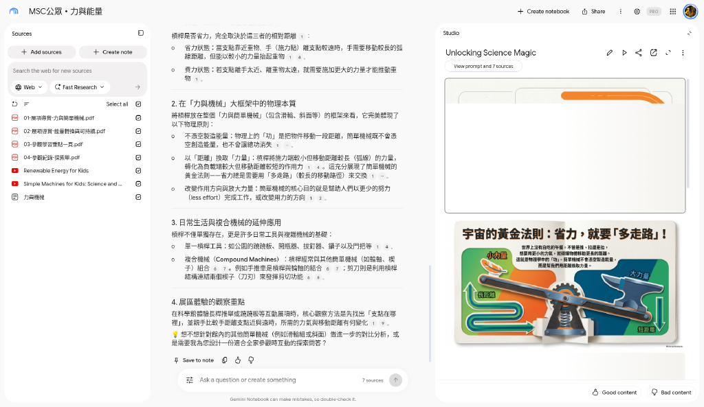
每日次數依方案分級；用盡見 Generate later。
示範檔： 05-infographic.png（科學館三大簡單機械 · 4.0 MB）· 06-slides.pdf（7.7 MB）· 06-slides.pptx（8.3 MB）。更多見 下載中心。
S3 家庭小測：爸媽／孩子輪流
| Flashcards | Quiz | |
|---|---|---|
| 用途 | 複習（翻卡記概念） | 提取練習（先答再揭曉） |
| 之後 | 答完用 Chat 問弱項、點回來源 | |
難度 Medium；範圍＝力、支點、動能、勢能、可再生能源；正面詞彙、背面一句人話解釋。
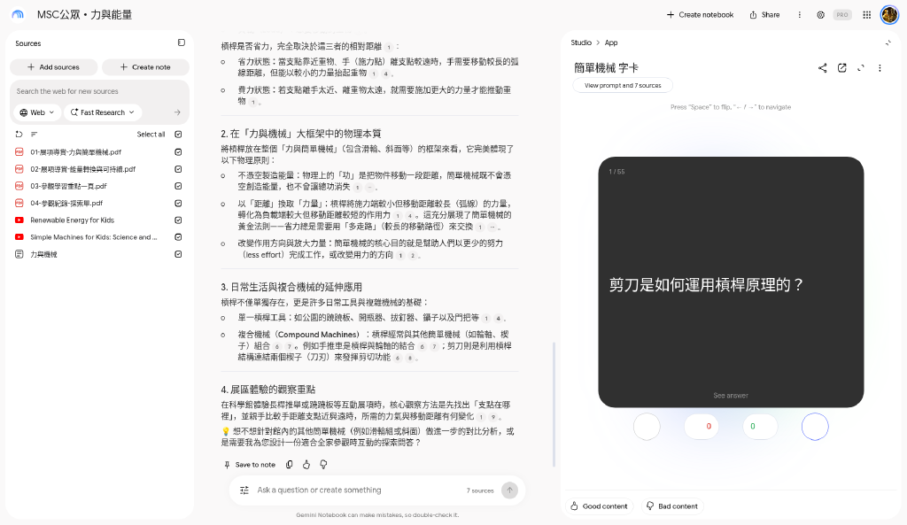
字卡：產品介面無匯出按鈕（查證 2026-10-23），本站無檔；課堂請在產品內使用。其他成品見 下載中心。
難度 Medium；出 5 題；偏理解不偏背定義；題幹避免超出來源內容。
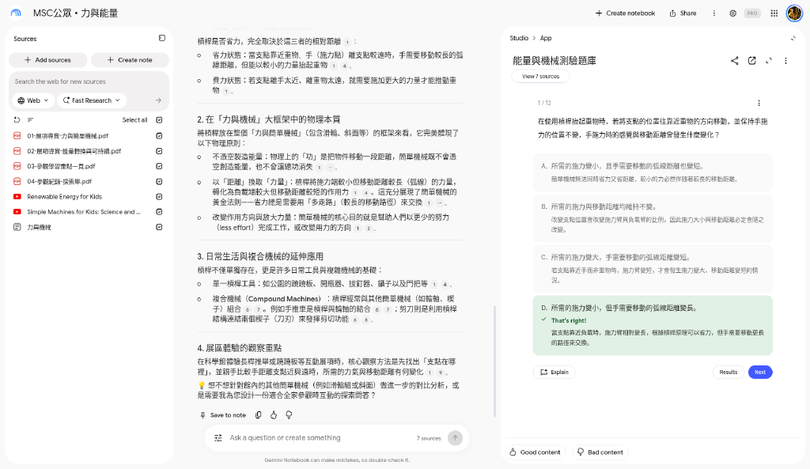
Quiz：產品介面無匯出按鈕（查證 2026-10-23），本站無檔；課堂請在產品內使用。其他成品見 下載中心。
S3 大字投影 3 題
S1 示例數據
問：「哪一個角度平均滾落較快？」
28-chat-csv-question.pngS6 分享給親友前先看帳號類型
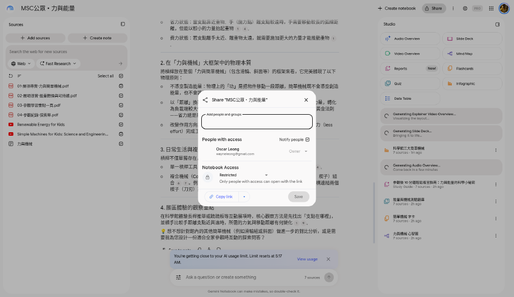
S6 公開連結＝當成公開網頁
30-advanced-sharing-if-any.pngS4 通勤可用手機端（若地區／帳號允許）
31-gemini-app-sync-hint.pngS5 帶回家：檔案比公開連結更穩妥
32-download-artifact.png本站已上架示範成品（Audio／Video／Infographic／Slides／Report），見 Infographic、 Slides PDF、 Audio，或 下載中心。Quiz／字卡／心智圖產品無匯出。
33-cloud-computer-if-any.png34-web-research-if-any.png35-mobile-voice-or-capture.png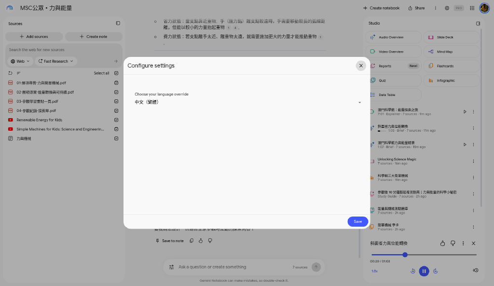
37-usage-or-generate-later.pngS3 家庭也可玩抓錯
公眾班若有未成年人，優先 Explainer／Audio／Quiz，勿強推 Cinematic。
全部為公眾／家庭語氣。點「複製」即可貼上。各功能頁已重複對應碼。
你是科學館導賞助手。只根據筆記本來源，用 12 歲以上家庭聽得懂的話，列出今天參觀「力與簡單機械」必懂的 5 個概念；每一點附引用。少公式、多生活例子。
不要直接給答案。用引導式問題，幫我自己想清楚：槓桿的支點、施力、抗力分別是什麼？一次只問一個問題。
Audience：來澳門科學館的家庭訪客（約 12 歲以上）。Focus：省力原理與動能／勢能轉換；少公式；語氣像友善導賞員。格式建議 The Brief；語言 Traditional Chinese。
Audience：家庭訪客。Focus：用滾珠／斜面故事講能量轉換；畫面節奏清楚；語言與帳戶輸出設定一致（優先繁中若可用）。避免誇大「一定省力多少倍」。
同上 audience，但 Focus 改為「只關斜面與滾落，不講槓桿」；長度 Shorter。
做一份「參觀後 10 分鐘複習」學習指南：三個必記句子、兩個常見誤解、三題自問自答；對象＝家庭訪客，非考試卷。
一張圖說清「三種簡單機械＋各一個科學館情境例子」；大字、少字、適合手機分享。
Presenter 風格、約 6 頁：封面、力、簡單機械、能量轉換、可持續、回家可以做的一件事；對象＝公眾班投影。
難度 Medium；範圍＝力、支點、動能、勢能、可再生能源；正面詞彙、背面一句人話解釋。
難度 Medium；出 5 題；偏理解不偏背定義；題幹避免超出來源內容。
| 碼 | 場景 | 主要功能 |
|---|---|---|
| S1 | 行前準備 | 來源、Chat＋引用、Mind Map |
| S2 | 館內／回家複習 | Audio Overview（繁中、Brief） |
| S3 | 家庭小測 | Quizzes、Flashcards |
| S4 | 通勤複習 | Audio；Mobile 語音（滾動） |
| S5 | 做一頁帶回家 | Infographic、Slide、Report、下載 |
| S6 | 分享給親友 | 分享＋隱私 |
| 時間 | 做什麼 |
|---|---|
| 0:00–1:00 | 打開筆記本，指來源區：「只根據我們放進去的回答」 |
| 1:00–3:30 | Chat＋點引用（槓桿／支點） |
| 3:30–5:30 | 再問勢能／動能轉換 |
| 5:30–8:30 | Audio Overview（家庭、Brief、繁中）播 20–30 秒 |
| 8:30–11:00 | Mind Map 或 Report 擇一 |
| 11:00–13:30 | Flashcards 或 Quiz 出 3 題 |
| 13:30–15:00 | （選）CSV＋收束：下載／隱私 |
細節見 demo-plan.md。事前已建好筆記本與來源。
現場以介面為準。徽章：Free／Mixed／Paid／滾動。
| # | 功能 | 標記 |
|---|---|---|
| 1 | 建立 Notebook | Free |
| 2 | 上傳／新增來源 | Free |
| 3 | 來源式對話＋引用 | Free |
| 4 | Audio Overview | Mixed |
| 5 | Audio Interactive | Free※English |
| 6 | Video Overview | Mixed；Cinematic Paid |
| 7 | Producer notes | Ultra |
| 8 | Mind Map | Free |
| 9 | Reports／Study guides | Mixed |
| 10–11 | Flashcards／Quizzes | Free※額度 |
| 12–13 | Infographic／Slide Deck | Free※額度 |
| 14 | 多份同類型 Studio | Free |
| 15–16 | 分享／進階分享 | Free／Paid |
| 17 | Gemini App 同步 | Free |
| 18–20 | Cloud computer／下載／Web research | Paid／Mixed／滾動 |
| 21–22 | Mobile 語音／錄音拍照 | 滾動 |
| 23–26 | Guided Learning／Save to Note／Generate later／輸出語言 | Free |
| 問題 | 去哪一頁 |
|---|---|
| 打不開／location=unsupported？ | 澳門／香港存取注意（A07） |
| 額度沒了？ | Generate later（G02） |
| Education 不能公開連結？ | 分享基本款（F01）＋隱私（F02） |
| 繁中 Interactive Audio？ | 不行——僅 English（D05） |
| Cinematic 做不出來？ | 18+／Pro+／Ultra／English（D07） |
| AI 講錯鑷子／斜面？ | 有引用仍可能錯（C04） |
僅列研究已收錄 URL。額度與按鈕以官方當日為準。
正式名 Gemini Notebook（原 NotebookLM）· notebook.google
示範筆記本：MSC公眾・力與能量
查證：2026-10-23 Asia/Macau
澳門／香港不在官方支援地區名單——現場以實測為準
澳門科學館 Oscar 製作 · 已上線
額度／地區／按鈕以官方當日介面為準